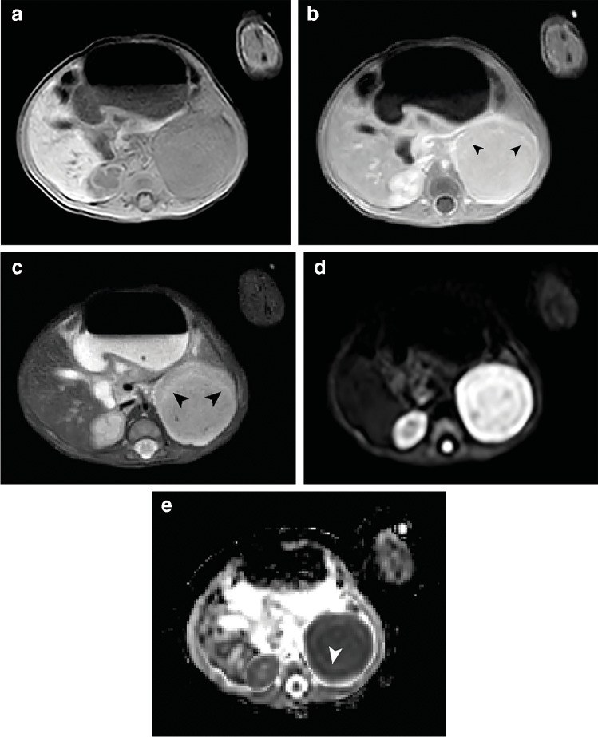
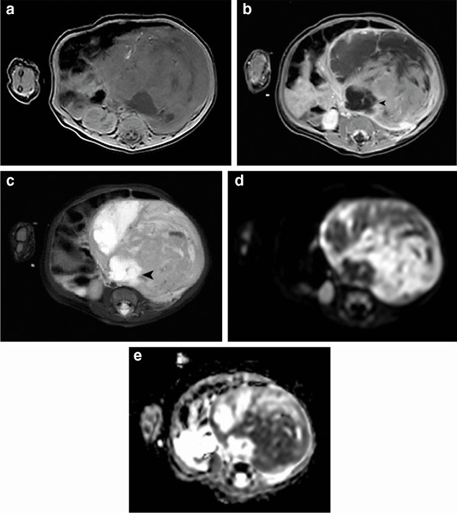
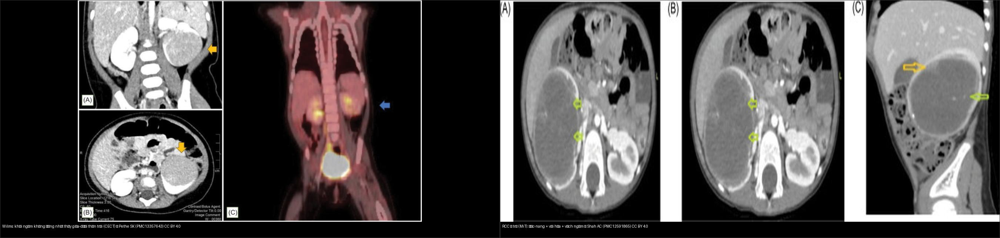
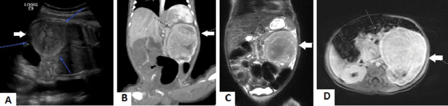
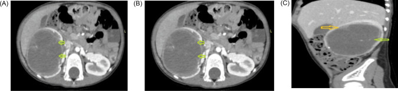
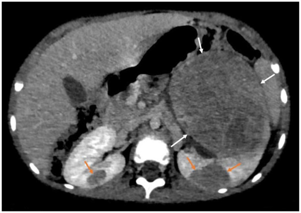
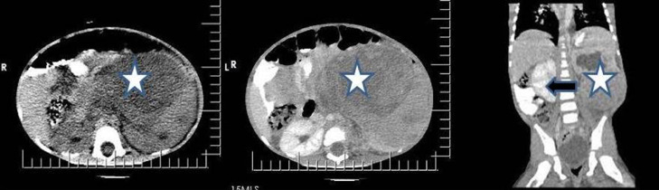

639 — Khối thận đặc ở trẻ: u nguyên bào thận (Wilms) vs u cơ trung mô bẩm sinh vs RCC / Pediatric solid renal mass: Wilms tumor vs congenital mesoblastic nephroma vs RCC
Tags: pattern:khoi-than-dac pattern:u-nguyen-bao-than pattern:u-co-trung-mo pattern:rcc-nhi vung:than vung:o-bung-nhi score:COG score:SIOP protocol:US-CT-MRI-than-nhi incidentaloma:o-nguyen-bao-than
Mức chắc chắn (certainty): tổng hợp y văn (literature synthesis) — tổng hợp từ nghiên cứu đoàn hệ/hồi cứu đa trung tâm + ca nguyên văn (verbatim case) giữ đúng tuổi – lâm sàng – chú thích gốc: đặc điểm MRI của u cơ trung mô bẩm sinh (van der Beek JN et al., Pediatr Radiol 2024, PMC11111520), ca u cơ trung mô hỗn hợp sơ sinh (Alpakra M et al., Cureus 2024, PMC11529903), u nguyên bào thận + ổ nguyên bào thận hai bên (Naggar A et al., Glob Pediatr Health 2024, PMC10785724), RCC ở trẻ (Shah AC et al., J Kidney Cancer VHL 2025, PMC12591865), ca u nguyên bào thận điển hình (Ikhuoriah T et al., Radiol Case Rep 2023, PMC10023853), phẫu thuật bảo tồn thận (Pethe SK et al., J Kidney Cancer VHL 2026, PMC13357643).
1. Tổng quan — vì sao TUỔI là biến số mạnh nhất, và vì sao mô học quyết định "đồng nhất hay không đồng nhất"
- Nguyên tắc số 1: đặt tuổi lên trước khi mô tả khối. Cùng một "khối thận đặc" nhưng chẩn đoán phân biệt xếp chồng hoàn toàn theo tuổi:
- < 6 tháng tuổi (nhũ nhi): u cơ trung mô bẩm sinh (congenital mesoblastic nephroma — CMN) là u thận đặc hay gặp nhất ở trẻ sơ sinh (chiếm 2–5% u thận nhi), tuổi trung vị 1 tháng (0 ngày–23 tháng).
- 1–10 tuổi: u nguyên bào thận (nephroblastoma / Wilms tumor) — u thận ác hay gặp nhất ở trẻ, chiếm ~6% mọi ung thư nhi và ~85% u thận nhi trong thập niên đầu; tuổi đỉnh ~3 tuổi.
- Thập niên thứ 2 (9–15 tuổi): ung thư biểu mô tế bào thận (renal cell carcinoma — RCC) trở nên phổ biến hơn Wilms; trong đó RCC nhóm chuyển đoạn (MiT-family translocation, TFE3/TFEB) chiếm 20–40% RCC ở trẻ.
- TẠI SAO Wilms có "tiền thân" trên hình ảnh: Wilms phát sinh từ ổ nguyên bào thận (nephrogenic rests) — ổ tế bào thận phôi tồn tại sau tuần thai 36. Ổ này gặp tình cờ ~1% trẻ nhũ nhi, và ~28–40% Wilms một bên và 90–100% Wilms hai bên đi kèm ổ nguyên bào thận; khi lan tỏa/nhiều ổ gọi là nephroblastomatosis. Vì vậy luôn đọc cả hai thận và tìm các nốt nhỏ vệ tinh.
- TẠI SAO CMN thể kinh điển lại ĐỒNG NHẤT trên MRI (vật lý + mô học): thể kinh điển gồm tế bào hình thoi lành, ít phân bào, KHÔNG hoại tử/xuất huyết, chất nền đồng nhất → T2 đồng tín hiệu, ngấm đồng nhất, có thể thấy dấu vòng đồng tâm (concentric ring sign) ở 58,3%. Ngược lại, thể tế bào (cellular) có chỉ số phân bào cao, hoại tử/xuất huyết/nang → T2 không đồng nhất, kích thước lớn hơn nhiều (311,6 cm³ so với 41,0 cm³ thể kinh điển, p < 0,001), hoại tử/xuất huyết 72,7% và nang 72,7%, xâm lấn 27,3%.
- Số liệu định lượng nằm lòng:
- Wilms: OS ngày nay > 90%; u hai bên 5–8% ca, 2/3 đồng thời, tuổi trung vị 24 tháng, OS dài hạn ~80% (Martos Rodríguez M et al., Ann Surg Oncol 2026, PMC13452865).
- Vỡ u (rupture) là biến cố nặng: tần suất chung 2–10% (đoàn hệ 15,3%); 100% vỡ thuộc giai đoạn III/IV; EFS 5 năm 44,1% vs 75,8% và OS 58,2% vs 81,4% (không vỡ); HR tử vong 17,62 (95% CI 2,69–115,48) (Emadeldeen H et al., Curr Oncol 2026, PMC13206529).
- RCC ở trẻ: chỉ 1,4–6,3% u thận nhi; phân bố theo tuổi 1,4% (< 4 tuổi) · 15–20% (5–9 tuổi) · 52,6% (10–15 tuổi) (Shah AC et al., PMC12591865).
- Xử trí đặc thù theo tuổi (SIOP-RTSG): < 3 tháng tuổi → cắt thận trước (upfront nephrectomy)** — chuẩn điều trị CMN; **≥ 3 tháng mà u thận** thì **sinh thiết không được khuyến khích**, và **> 6 tháng thì hóa trị trước mổ theo phác đồ Wilms (SIOP UMBRELLA) là chuẩn (van der Beek JN et al., PMC11111520).

U cơ trung mô bẩm sinh thể kinh điển, thể tích 44 cm³: (a) T1W axial đồng nhất, đồng tín hiệu; (b) T1W sau tiêm ngấm đồng nhất + dấu vòng đồng tâm (concentric ring sign) (đầu mũi tên); (c/d) T2W/chuỗi khác giữ tính đồng nhất — mô học tế bào hình thoi lành không hoại tử. van der Beek JN et al., Pediatr Radiol 2024 (PMC11111520, Fig. 1), CC BY 4.0.2. Mẫu hình + chẩn đoán phân biệt theo tuổi & hình thái (Gamut)
Đọc hai trục cùng lúc: (1) tuổi và (2) tính đồng nhất + thành phần (nang/hoại tử/mỡ/vôi hóa) trên siêu âm–CT–MRI.
- Nhũ nhi < 6 tháng, khối đặc ĐỒNG NHẤT, không hoại tử: hướng CMN thể kinh điển (lành, chỉ cần cắt thận). Nếu không đồng nhất + nang + xuất huyết → CMN thể tế bào/hỗn hợp (dễ nhầm u ác, cần đối chiếu mô học).
- Trẻ 1–10 tuổi, khối lớn không đồng nhất + "giả vỏ" + có thể xâm lấn mạch/tĩnh mạch chủ dưới: hướng Wilms. Luôn tìm ổ nguyên bào thận hai bên và đối bên.
- Trẻ ≥ 9–10 tuổi, khối đặc-nang, có vôi hóa, hạch: hướng RCC (ở trẻ hay là chuyển đoạn MiT, dương TFE3/PAX8).
- Gamut "khối bụng sau phúc mạc" ở trẻ (không xuất phát từ thận): u nguyên bào thần kinh (neuroblastoma) — khối ngoài thận, thường vôi hóa thô, bao/bọc mạch ("encasement") thay vì đẩy mạch; u cơ vân (rhabdomyosarcoma), u lympho, u cơ trung mô thận khác. Phân biệt gốc trong/ngoài thận là bước 1 (xem bài
630). - Mẹo nhớ theo tuổi — "0–6–10": 0–6 tháng → CMN; 1–10 tuổi → Wilms; > 9–10 tuổi → RCC.

U cơ trung mô bẩm sinh thể tế bào ở bé gái 2 tháng, thể tích 312 cm³: (a) T1W axial không đồng nhất; (b) sau tiêm ngấm không đồng nhất + nang lớn (đầu mũi tên); (c) T2W lộ rõ xuất huyết/hoại tử — vì vậy thể tế bào dễ bị nhầm với u ác. van der Beek JN et al., Pediatr Radiol 2024 (PMC11111520, Fig. 2), CC BY 4.0.3. Bảng so sánh phân biệt (ma trận đối chiếu)
| Thực thể (entity) | Tuổi hay gặp | Hình ảnh điển hình | Chốt vào (rule-in) | Chốt loại (rule-out) | Gợi ý xác nhận |
|---|---|---|---|---|---|
| CMN thể kinh điển | < 6 tháng (trung vị 1 tháng) | Đồng nhất, T2 đồng tín hiệu, ngấm đồng nhất, dấu vòng đồng tâm (58,3%), không hoại tử/nang | Nhũ nhi + khối đồng nhất + không nang/hoại tử + thể tích nhỏ (~41 cm³) | Có hoại tử/nang/xuất huyết → không phải thể kinh điển | Cắt thận trước (không sinh thiết) nếu < 3 tháng |
| CMN thể tế bào/hỗn hợp | Nhũ nhi, có thể tới 23 tháng | Không đồng nhất, nang (72,7%), hoại tử/xuất huyết (72,7%), xâm lấn (27,3%), thể tích lớn (311,6 cm³) | Khối lớn không đồng nhất ở nhũ nhi | Đặc đồng nhất + vòng đồng tâm → thể kinh điển | Mô bệnh học (phân biệt với u ác); theo dõi tái phát |
| U nguyên bào thận (Wilms) | 1–10 tuổi (đỉnh ~3 tuổi) | Khối lớn, không đồng nhất, giả vỏ, đẩy mạch; ổ nguyên bào thận vệ tinh; có thể xâm lấn tĩnh mạch chủ dưới/nhĩ phải | Trẻ lớn + khối lớn không đồng nhất + ổ nguyên bào thận ± huyết khối mạch | Tuổi < 6 tháng + hoàn toàn đồng nhất → nghĩ CMN | US → MRI/CT hai thận; mô bệnh học sau mổ/hóa trị |
| RCC ở trẻ | 9–15 tuổi | Khối đặc-nang, vách ngấm, vôi hóa, hạch | Trẻ ≥ 9–10 tuổi + đặc-nang + vôi hóa | Trẻ nhỏ < 6 tháng → gần như loại RCC | Hóa mô miễn dịch TFE3/PAX8 (chuyển đoạn MiT) |
| Neuroblastoma (ngoài thận) | Nhũ nhi–trẻ nhỏ | Khối ngoài thận, vôi hóa thô (hay gặp), bọc/bao mạch | Khối không xuất phát từ thận + vôi hóa thô + bao mạch | Còn dấu hiệu "giả vỏ" thận + đẩy mạch → nghĩ Wilms | MIBG, metanephrine; xem bài 630 |
Bảng phân biệt ổ nguyên bào thận (nephrogenic rest) vs u nguyên bào thận (cùng nằm trong 1 thận):
| Đặc điểm | Ổ nguyên bào thận (rest) | U nguyên bào thận (Wilms) |
|---|---|---|
| Kích thước | Nốt nhỏ, thường < 1–2 cm | Khối lớn, thường > 3–5 cm |
| Tín hiệu/ngấm | T2 đồng tín hiệu, hầu như không ngấm | Không đồng nhất, ngấm rõ, có nang/hoại tử |
| Bờ | Bờ rõ, "nguyên vẹn" | Giả vỏ, đẩy/ép nhu mô |
| Ý nghĩa | Tiền ung thư — theo dõi, có thể teo nhỏ sau hóa trị | U ác — cần điều trị đa mô thức |
| Số liệu | Gặp tình cờ ~1% nhũ nhi; đi kèm 28–40% Wilms một bên | Ổ nguyên bào thận đi kèm 90–100% Wilms hai bên |

*Trái — u nguyên bào thận (Wilms): khối ngấm thuốc không đồng nhất ở thùy giữa–dưới thận trái, có "giả vỏ" (đẩy mạch, không bọc). Phải — RCC ở trẻ: khối đặc-nang, vách ngấm mỏng, vôi hóa (mũi tên vàng) — chân dung của RCC chuyển đoạn nhóm MiT ở tuổi 9–15. Ảnh ghép letterbox giữ tỷ lệ (chỉ ghép 2 ảnh CC BY). Pethe SK et al. (PMC13357643) + Shah AC et al. (PMC12591865), CC BY 4.0.*4. Protocol + phân giai đoạn + sơ đồ
- Siêu âm (ultrasound) là bước 1 (đầu tay): xác định khối trong thận hay ngoài thận, đặc hay nang, tìm huyết khối tĩnh mạch chủ dưới, và khảo sát thận đối bên. Đây là lý do "phát hiện khối bụng tình cờ trên siêu âm".
- MRI được ưu tiên cho Wilms (đánh giá xuất phát trong thận, xâm lấn mạch — tĩnh mạch chủ dưới/nhĩ phải, thận đối bên, ổ nguyên bào thận). CT có cản quang dùng khi MRI không khả dụng hoặc cần đánh giá phổi (di căn). Trẻ nhũ nhi: hạn chế liều xạ (ALARA) — ưu tiên siêu âm/MRI.
- Tránh "biến u thành biến cố": hạn chế nắn/bấm khối nhiều lần (nguy cơ vỡ u làm tăng giai đoạn và giảm sống còn) và không sinh thiết ở trẻ < 3 tháng tuổi theo SIOP-RTSG.
- Phân giai đoạn (có 2 trường phái, khác nhau ở THỜI ĐIỂM mổ):
- COG/NWTS (Mỹ): mổ trước rồi hóa trị theo giai đoạn bệnh phẩm — I khu trú trong thận, cắt hết; II lan ra ngoài thận nhưng cắt hết; III còn u trong ổ bụng (hạch, phúc mạc, vỡ u, bờ cắt dương); IV di căn xa (phổi/gan/xương/não); V hai bên.
- SIOP (châu Âu): hóa trị trước mổ để thu nhỏ và "hạ giai đoạn", rồi mới mổ và phân giai đoạn theo hình ảnh + bệnh phẩm sau hóa trị.
- Điều trị – điểm mấu chốt của hình ảnh: u hai bên (5–8%) và khối chỉ còn ở giai đoạn I, u ≤ 4 cm là nhóm cân nhắc phẫu thuật bảo tồn thận (nephron-sparing surgery — NSS), trong đó NSS A (cắt bán phần) được ưu tiên hơn NSS B (bóc u) (Pethe SK et al., PMC13357643).
flowchart TD
A["Khối bụng/khối thận ở trẻ"] --> US["Siêu âm: khối TRONG hay NGOÀI thận?"]
US -->|"ngoài thận, vôi hóa thô, bao mạch"| NB["Nghĩ neuroblastoma → xem bài 630"]
US -->|"trong thận"| AGE{"Tuổi"}
AGE -->|"< 6 tháng"| CMN{"Đồng nhất?"}
CMN -->|"đồng nhất, không nang/hoại tử"| C1["CMN thể kinh điển — cắt thận trước, không sinh thiết"]
CMN -->|"không đồng nhất, nang/xuất huyết"| C2["CMN thể tế bào/hỗn hợp — đối chiếu mô học, theo dõi tái phát"]
AGE -->|"1-10 tuổi"| W["Nghĩ Wilms (u nguyên bào thận)"]
W --> IMG["MRI ưu tiên: hai thận + xâm lấn mạch (TM chủ dưới/nhĩ phải) + ổ nguyên bào thận"]
IMG --> STG{"Hai bên?"}
STG -->|"có (5-8%)"| B["Giai đoạn V — NSS nếu được"]
STG -->|"không"| COG["COG: mổ trước rồi hóa trị theo giai đoạn I-IV<br/>SIOP: hóa trị trước mổ rồi phân giai đoạn"]
AGE -->|"> 9-10 tuổi"| RCC["Nghĩ RCC — hóa mô miễn dịch TFE3/PAX8 (chuyển đoạn MiT)"]
5. Biến thể bình thường & cạm bẫy
- Ổ nguyên bào thận KHÔNG phải Wilms: nốt nhỏ, bờ rõ, hầu như không ngấm — đừng gọi là u ác; nhưng phải theo dõi (tiền ung thư) và luôn khảo sát thận đối bên.
- CMN thể tế bào "giả u ác": không đồng nhất + nang + xuất huyết ở nhũ nhi có thể bị đọc nhầm là u ác → tuổi < 6 tháng là chốt + chỉ định mô học.
- RCC ở trẻ thường bị xếp nhầm vào "Wilms không điển hình": trẻ ≥ 9–10 tuổi + vôi hóa + đặc-nang → nghĩ RCC; khác biệt hóa trị trước mổ (Wilms) vs mổ là chính (RCC).
- Cạm bẫy xâm lấn mạch: huyết khối u lan vào tĩnh mạch chủ dưới/nhĩ phải thay đổi kế hoạch mổ (cần MRI/echo tim) — luôn nêu rõ có/không.
- Vỡ u (rupture) là cờ đỏ: gây tăng giai đoạn (III/IV) và giảm sống còn rõ (OS 58,2% vs 81,4%). Hạn chế nắn khối, và cảnh giác ở u đã vỡ (dịch ổ bụng, đau cấp).
- Hội chứng dễ mắc (predisposition): Beckwith–Wiedemann, WAGR, Denys–Drash → tầm soát hai thận định kỳ và cân nhắc NSS để giữ nhu mô (u đồng thời/đối bên muộn).
- Cạm bẫy "thể tích/đo đạc": ổ nguyên bào thận teo nhỏ sau hóa trị (không phải "u biến mất thần kỳ"); đối chiếu trước–sau để không đánh giá sai đáp ứng.
6. Tự lượng giá — Blind Quiz
Ca 1 — Bé trai 1 tháng tuổi, sờ thấy khối bụng trái. Nhìn MRI, mô tả trước.
- Hỏi: tính đồng nhất? có nang/hoại tử không? chẩn đoán và hướng xử trí?
Bấm để hiện đáp án
- Khối đặc ĐỒNG NHẤT, đồng tín hiệu, ngấm đồng nhất + dấu vòng đồng tâm, không nang/hoại tử → CMN thể kinh điển.
- < 3 tháng tuổi → cắt thận trước (upfront nephrectomy), KHÔNG sinh thiết theo SIOP-RTSG.
- Nguồn ca: van der Beek JN et al., Pediatr Radiol 2024 (PMC11111520, Fig. 1), CC BY 4.0.
Ca 2 — Bé gái 2 tháng tuổi, khối thận trái lớn. Đọc MRI, so với Ca 1:
- Hỏi: khác Ca 1 ở đâu? chẩn đoán? vì sao dễ nhầm?
Bấm để hiện đáp án
- Không đồng nhất, nang lớn + xuất huyết/hoại tử → CMN thể tế bào (thể tích 312 cm³, lớn gấp ~7 lần thể kinh điển).
- Dễ nhầm u ác vì không đồng nhất; chốt vẫn là tuổi nhũ nhi + mô học.
- Nguồn: van der Beek JN et al., Pediatr Radiol 2024 (PMC11111520, Fig. 2), CC BY 4.0.
Ca 3 — Khối bụng ở trẻ nhỏ: khối nào là u nguyên bào thận, khối nào là u cơ trung mô? Nhìn ảnh và lập luận:

- Hỏi: chuỗi hình ảnh cho thấy gì? cạm bẫy về "phát hiện trước sinh"?
Bấm để hiện đáp án
- (A) siêu âm trong tử cung đã thấy thận trái to + khối bờ rõ, đồng tín hiệu, ngấm đồng nhất; (B) CT coronal; (C/D) MRI T2 coronal/axial.
- Chẩn đoán: u cơ trung mô bẩm sinh thể hỗn hợp — khối có thể phát hiện trước sinh, gây đa ối; đại thể + vi thể (ảnh Fig. 2 cùng bài) cho thấy tế bào hình thoi trong khi còn đảo nhu mô thận.
- Cạm bẫy: "khối thận ở thai/nhũ nhi" thường bị nghĩ ngay "Wilms" → sai tuổi; < 6 tháng hãy nghĩ CMN.
- Nguồn ca: Alpakra M et al., Cureus 2024 (PMC11529903, Fig. 1), CC BY 4.0.
Ca 4 — Trẻ 12 tuổi, tiểu máu đại thể mạn, khối thận phải. Nhìn CT:

- Hỏi: mô tả tổn thương? vì sao nghĩ RCC chứ không phải Wilms?
Bấm để hiện đáp án
- (A) CT không tiêm: khối đặc-nang không đồng nhất trong thận phải, có vôi hóa (mũi tên vàng); (B/C) CECT: vách ngấm mỏng, thành phần đặc ngoại vi.
- Tuổi 12 + đặc-nang + vôi hóa → nghĩ RCC (hóa mô miễn dịch TFE3+, PAX8+ = RCC chuyển đoạn nhóm MiT).
- Nguồn ca: Shah AC et al., J Kidney Cancer VHL 2025 (PMC12591865, Fig. 1), CC BY 4.0.
Ca 5 — Trẻ 3 tuổi, khối thận trái lớn; CT thấy thêm nốt nhỏ hai bên. Đọc và quyết định bước tiếp theo:

- Hỏi: khối lớn là gì? các nốt nhỏ hai bên là gì? vì sao phải tìm?
Bấm để hiện đáp án
- Khối lớn (mũi tên trắng) = u nguyên bào thận (Wilms) thùy dưới thận trái.
- Các nốt nhỏ hai bên, bờ rõ, hầu như không ngấm (mũi tên cam) = ổ nguyên bào thận (nephrogenic rests / nephroblastomatosis).
- Vì sao phải tìm: ổ nguyên bào thận là tiền ung thư, đi kèm 28–40% Wilms một bên và 90–100% Wilms hai bên → đổi theo dõi và cân nhắc NSS.
- Nguồn ca: Naggar A et al., Glob Pediatr Health 2024 (PMC10785724, Fig. 2), CC BY-NC 4.0 (nguyên bản).
Ca 6 — Trẻ 3 tuổi, khối thận trái lớn trên siêu âm/CT. Nhìn hình, nêu 3 chốt cần ghi trong báo cáo:

- Hỏi: khối xuất phát từ đâu? có xâm lấn không? báo cáo cần ghi gì?
Bấm để hiện đáp án
- Khối đặc-nang không đồng nhất ngấm thuốc, xuất phát từ thận trái (không phải khối ngoài thận), đẩy (không bọc) mạch và quai ruột → hướng Wilms.
- 3 chốt bắt buộc: (1) xuất phát trong thận; (2) huyết khối mạch (tĩnh mạch chủ dưới/nhĩ phải) có/không; (3) thận đối bên + ổ nguyên bào thận có/không.
- Nguồn ca: Ikhuoriah T et al., Radiol Case Rep 2023 (PMC10023853, Fig. 7), CC BY-NC-ND 4.0 (nguyên bản, không crop/ghép).
Bài liên quan chéo
- 600 – Tổng quan Nhi khoa
- 630 – U bụng nhi: neuroblastoma vs Wilms
- 636 – Cấp cứu niệu–sinh dục nhi
- 638 – Khối bìu–tinh hoàn nhi
- 665 – Khối u gan nhi
- 151 – U thận đặc người lớn (RCC vs oncocytoma vs AML)
- 156 – Hội chứng di truyền u thận
Không dùng để chẩn đoán độc lập khi chưa có người hướng dẫn.